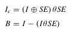
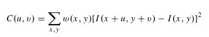
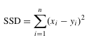

Parts to make the machinery work
One part which was used to make computer vision for weapon detection work was the Fast RCNN model. That model was proposed and based on RCNN. This method does not require candidate frames to be included in the Deep Learning model. However, only certain training images are tested in the model, automatically mapping the coordinates at the feature level and speeding up the detection of the model. The accuracy of Fast RCNN on dataset PASCAL-VOC 2007 had overall decently increased in percentage, therefore increasing the efficiency as well.
The Faster RCNN algorithm was then introduced, and a module called RPN was designed to make the frames required by the training algorithm. An Anchor was also created to extract candidate frames from RPN at various scales. The ‘RPN + Anchor’ approach in the Faster RCNN replaces the Selective Search approach in the original method, which allows the model to be used efficiently and greatly improves the speed.
SSD, or Single Shot Detection, is also used.
Object detection and tracking methods work with datasets being created, trained, and deployed to object detection algorithms. A suitable detection algorithm is chosen for weapon detection. The method would examine and solve the problem, using various machine-learning models such as not only Region Convolutional Neural Network, but also a method called Single Shot Detection.
 The fast RCNN model has been used by both security checks and survillence machinery.
The CNN and RCNN portion of the project has two networks, one to to create relation proposals and other for network for detection. Selective search approach is used to create region proposals, with the RPN network ranking anchors and region boxes.
CCTV's GDS has used color-based segmentation and interest point detectors, as well as Harris interest point detectors and FREAK descriptors to detect features.
Its color based segmentation feature involved k-means clustering algorithms to separate other objects, then apply morphological processing on each object to bridge small gaps and extract boundaries. Interest point features are then extracted and matched with a stored descriptor to find out if the footage object is similar to a gun. It sets off an alarm if the accuracy is over 50%.
The fast RCNN model has been used by both security checks and survillence machinery.
The CNN and RCNN portion of the project has two networks, one to to create relation proposals and other for network for detection. Selective search approach is used to create region proposals, with the RPN network ranking anchors and region boxes.
CCTV's GDS has used color-based segmentation and interest point detectors, as well as Harris interest point detectors and FREAK descriptors to detect features.
Its color based segmentation feature involved k-means clustering algorithms to separate other objects, then apply morphological processing on each object to bridge small gaps and extract boundaries. Interest point features are then extracted and matched with a stored descriptor to find out if the footage object is similar to a gun. It sets off an alarm if the accuracy is over 50%.
 The GDS also uses system initialization, which puts stored interest point descriptors together with extracted interest point features. The system also uses Harris interest point detector and FREAK to compare images, and preprocessing to remove images from the image during transmission of the video, via a median filter. Image resizing is used to process the images in the system.
The GDS also uses system initialization, which puts stored interest point descriptors together with extracted interest point features. The system also uses Harris interest point detector and FREAK to compare images, and preprocessing to remove images from the image during transmission of the video, via a median filter. Image resizing is used to process the images in the system.
FREAK is a keypoint descriptor which is inspired by the vision of the human visual system. A sampling pattern is part of the cascade's computation of binary strings by comparing image features. It is also faster and more accurate than other keypoint descriptors. The binary representation is used for dimensionality reduction.
It can also manipulate smoothing of the input image with Gaussian kernel for noise suppression. The binary descriptor F is made by thresholding the comparison between receptive fields with their Gaussian kernel. It's also created by Difference of Gaussians.
Morphological closing is calculated by having the output of closing, being the erosion of image with structuring element followed by dilation with the structuring element. The boundary is obtained by subtracting the erosion of image output from the original image. Here are the equations:

Ic is the output of closing, I is the original image, SE is the structuring element, and B is the boundary of image.
The Harris detector is useful for detecting weapons in security footage since it is constant to geometric transformation, illumination change, and noise. Here is its equation, where w(x,y) is the Gaussian window function centered at (x,y), I(x,y) is the image intensity at (x,y), and I(x+u, y+v) is the image intensity at the window shaft of (u,v) from (x,y).

Matching is used to compare the score between the descriptor between the gun and the blob. Interest point features are used for matching, with the inner texture's variation of object. The variation creates different features for interest points of different images, while the outline would remain constant or make slight changes. Similarity score is used to find out the extent of the object shape and if its similar to a shape of a gun.
The nearest neighbor ratio algorithm is to calculate the match between two descriptors with the metric sum of square difference. Like so:
